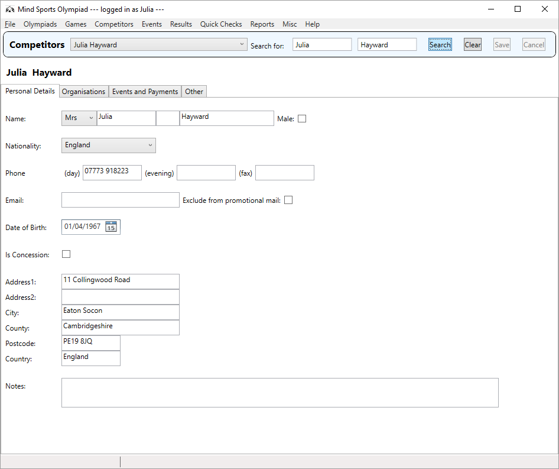
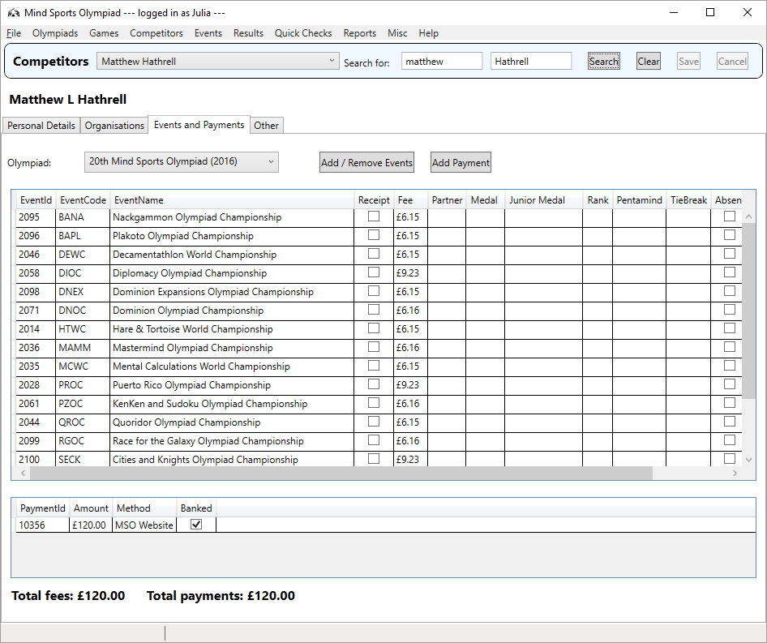
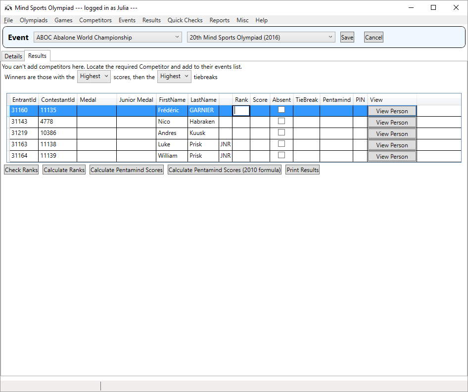

MSO Organiser Help
More help will appear here in due course. In the meantime, mail julia@juliahayward.com for assistance.
Useful information
You can find the current development schedule here -
ask Julia for access. All errors in the Organiser application are logged and (assuming an internet connection)
reported to Julia automatically. Updates are delivered as and when ready - you are advised to keep the
application up to date.
Using the application

- Select Competitors from the top menu
- A panel like the one above will open. Enter the name (or part of the name) you want and press Search
- The top dropdown will fill up with people we have seen before. If the one you want is not there, then
press Add New.
- Update as many details as you can!
- When done, press Save. If you make a mistake and wish to start over, press Cancel.

- Follow the previous steps to open the competitor you want.
- To add or change the events they are entered into, press Add/Remove Events. A popup box will
open where you can check the events the competitor wishes to enter. Note that you cannot remove an
event which they have already taken part in. Press OK when done or Cancel to start over.
- If there are any event clashes, the popup will warn you when you OK it.
- The events table will update with the new selection of events.
- To record a payment, press Add Payment. A popup box will open where you can set the amount of
the payment and the method (if you don't see the method you want, ask Julia to add it).
- Before saving, do check at the bottom that the total costs of the events and the total payments
made do match up correctly, and advise the competitor.
- When you are done, press Save on the main panel.

- Select Results > Edit Results from the top menu.
- Ensure you have the correct event selected from the dropdown.
- Ensure you have the correct rules for the event set up - i.e. whether the aim is to get a high
score or a low score.
- For each competitor, enter their Score and Tie Break from the event scorecards.
- If someone is listed but did not take part, check the Absent box.
- If the event involves playing as pairs, make sure everyone has a partner listed.
- Once done, click on the Tie Break table header, then the Score table header, to sort everyone into order.
- Next, assign medals and Junior medals as appropriate. Juniors are indicated by the label JNR next to
their name. This is not done automatically as sometimes multiple medals are awarded.
- Once done, press Save. If you make a mistake and wish to start over, press Cancel.
- On saving, the application will automatically calculate Ranks and Pentamind Points. You can do these
prior to saving, if you wish.
- You can also get the printed results for the noticeboards by pressing Print Results.
Web Links
The following pages are intended for retrieving reports on completed Olympiads.
The "current Olympiad" means the most recent one in the database,
which at the time of writing is 2016. Specific parameters can be varied as required.
The following are intended for live data for an ongoing Olympiad.
Integration with msoworld.com
Pre-paid bookings are passed automatically when verified, and are read into the current
Olympiad by clicking Misc > Load pre-payments.
You can verify bookings made on the website at
http://msoworld.com/wp-admin/edit.php?post-type=event if you have the appropriate login details.